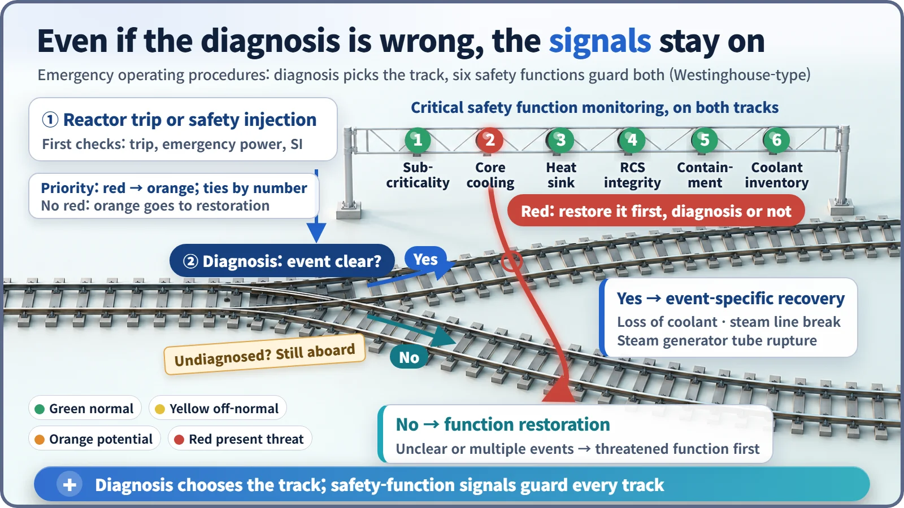
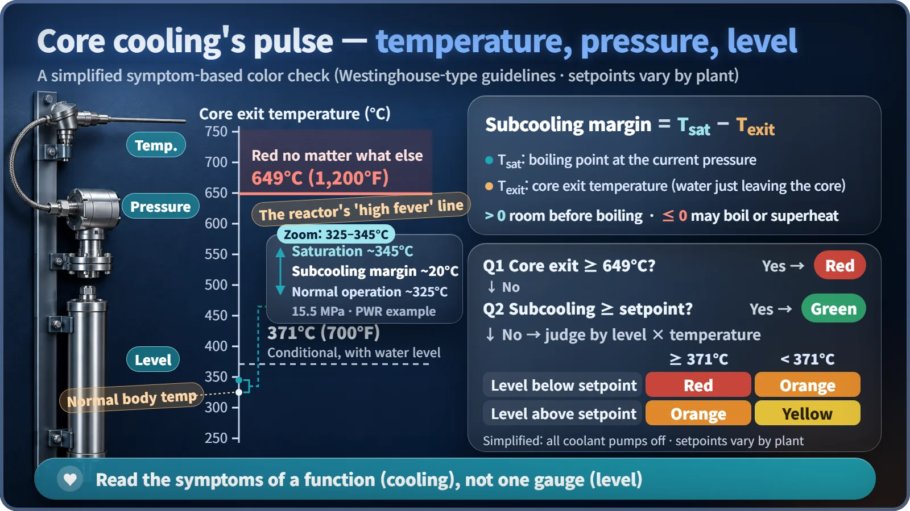

Safety Principles & Accident Analysis · 224
Check the Pulse Before Naming the Disease — Symptom-Based Emergency Operating Procedures
After Three Mile Island, procedures learned to read the plant's vital signs first. Diagnosis picks the track; six safety-function signals guard every track.
Symptom-based response judges, from instrument readings alone, whether a handful of critical safety functions are holding, and restores whichever is threatened first, even before the accident has been identified. Modern emergency operating procedures combine it with event-based procedures, so a wrong diagnosis can no longer steer the whole response the wrong way. [1]
The emergency room comes first
When a patient is rushed into the emergency room, the doctor checks the airway, breathing and circulation, the ABCs, before looking for the cause. Waiting for a full diagnosis could cost the patient's life. Nuclear plant operators follow a similar principle in their emergency operating procedures, through symptom-based response.
When everything rides on naming the accident
Emergency operating procedures are the step-by-step instructions operators follow from the moment the reactor trips or emergency cooling water starts being injected. Older procedures were mostly event-based: identify the accident first, then open the procedure written for it. That is fast and efficient when the diagnosis is right. The problem is when it is wrong.
In 1979, at Three Mile Island Unit 2, a pressure relief valve stuck open while the control room showed it "closed." Seeing the pressurizer (the tank that regulates reactor pressure) level reading high, operators concluded the reactor was full of water and, as trained, cut back the emergency cooling water. Coolant was in fact leaking out, and about half the core melted. Later analyses found the operators had acted "as they had been taught": trusting one instrument, they named the accident wrongly, and the whole procedure pointed the wrong way. [2] [3]
Watch the vital signs, not the cause
In symptom-based response, the measured values on the instruments (the symptoms) are used to judge whether the critical safety functions are maintained, and the threatened function is restored first, even if the cause is not yet known. In the Westinghouse-type guidelines there are six, and their order is their priority: [4] [5]
| Priority | Function | Question |
|---|---|---|
| 1 | Subcriticality | Has the fission chain reaction stopped? |
| 2 | Core cooling | Is heat being carried away from the fuel? |
| 3 | Heat sink | Is there still somewhere, such as the steam generators, to dump that heat? |
| 4 | Reactor coolant system integrity | Are pipes and vessel within pressure and temperature limits? |
| 5 | Containment | Is the final barrier building intact? |
| 6 | Coolant inventory | Is there enough water to cover the core? |
Subcriticality comes first because if the chain reaction doesn't stop, new heat keeps being made and no cooling can keep up; heat must fall for cooling to matter, and cooling must work for the barriers to hold.
Each function is watched with a yes/no decision tree whose result is a color: green normal, yellow off-normal, orange a potential threat, red a threat right now. When red appears, operators stop the procedure they are in and restore that function first. Orange is entered only when there is no red, and among equal colors the lower-numbered function goes first.

Event-based response was not thrown out. With a clear diagnosis, operators take the optimal procedure for that accident; without one, or with overlapping accidents, they go to function restoration, and on either track the six signals stay lit. If operators following a steam generator tube rupture procedure see the core cooling signal turn red, they restore core cooling before asking whether the diagnosis was right. Procedures at South Korea's nuclear plants are also based on this dual structure, depending on the reactor type. [6]
Reading core cooling from three numbers
Core cooling is read from temperature, pressure and the water level in the reactor. Thermocouples sit just above the fuel where coolant leaves the core, and their reading is paired with the subcooling margin:
Subcooling margin = saturation temperature (boiling point at the current pressure) − core exit temperature
A positive value means room before boiling; at zero or below, the water may be boiling or the steam superheating. In normal operation a pressurized water reactor runs at about 15.5 MPa, with a saturation temperature of about 345°C and a core exit temperature of about 325°C, a margin of about 20°C (example values that vary by design). At Three Mile Island the pressurizer level looked high, but this margin had already hit bottom.
In the Westinghouse-type tree, the status is green if the subcooling margin is above its setpoint, and red if the core exit temperature exceeds about 649°C (1,200°F) regardless of anything else. Above about 371°C (700°F), with the reactor coolant pumps stopped, a low vessel level is red and a level above setpoint is orange. Setpoints differ slightly between plants. [5]

Three misreadings
"Symptom-based means the cause is ignored." Diagnosis continues; safety functions just aren't left waiting for it. "Red means an accident has been declared." Red is a priority signal, "restore this function now," not a verdict. "Procedures replace human judgment." Procedures are a framework; cross-checking instruments and supervisory confirmation are still human work. Once core damage is under way, operators move on to separate severe accident management guidelines.
Key takeaways
Event-based response starts from "which accident is this?"; symptom-based response starts from "what is under threat right now?" Modern plants layer the two, with priorities that keep the six critical safety functions, the plant's vital signs, always in view. Like an ER doctor taking a pulse before naming the disease, operators can take the reactor's pulse without knowing the accident's name.